CNN example#
import xarray as xr
import numpy as np
import matplotlib.pyplot as plt
import glob, os
import random
import tensorflow as tf
from tensorflow import keras
physical_devices = tf.config.list_physical_devices('GPU')
print(physical_devices)
try:
for kgpu in range(len(physical_devices)):
tf.config.experimental.set_memory_growth(physical_devices[kgpu], True)
except:
# Invalid device or cannot modify virtual devices once initialized.
pass
2023-05-26 18:17:02.868544: I tensorflow/tsl/cuda/cudart_stub.cc:28] Could not find cuda drivers on your machine, GPU will not be used.
2023-05-26 18:17:02.948491: I tensorflow/tsl/cuda/cudart_stub.cc:28] Could not find cuda drivers on your machine, GPU will not be used.
2023-05-26 18:17:02.949921: I tensorflow/core/platform/cpu_feature_guard.cc:182] This TensorFlow binary is optimized to use available CPU instructions in performance-critical operations.
To enable the following instructions: AVX2 FMA, in other operations, rebuild TensorFlow with the appropriate compiler flags.
2023-05-26 18:17:04.241559: W tensorflow/compiler/tf2tensorrt/utils/py_utils.cc:38] TF-TRT Warning: Could not find TensorRT
[]
Build data pipeline#
input and output variable list#
Note that ptend_t and ptend_q0001 are not in the output (mlo) netcdf files, but calculated real-time on a tf Dataset object.
Variable list: https://docs.google.com/spreadsheets/d/1ljRfHq6QB36u0TuoxQXcV4_DSQUR0X4UimZ4QHR8f9M/edit#gid=0
# in/out variable lists
cfg = dict()
cfg['vars_mli'] = ['state_t','state_q0001','state_ps','pbuf_SOLIN', 'pbuf_LHFLX', 'pbuf_SHFLX']
cfg['vars_mlo'] = ['ptend_t','ptend_q0001','cam_out_NETSW','cam_out_FLWDS','cam_out_PRECSC','cam_out_PRECC','cam_out_SOLS','cam_out_SOLL','cam_out_SOLSD','cam_out_SOLLD']
Define tf dataset#
class E3SMDataset(object):
def __init__(self, cfg, verbose=False):
'''
'''
self.cfg = cfg
# Initialize normalization
self.mli_mean = xr.open_dataset('./norm_factors/mli_mean.nc')
self.mli_min = xr.open_dataset('./norm_factors/mli_min.nc')
self.mli_max = xr.open_dataset('./norm_factors/mli_max.nc')
self.mlo_scale = xr.open_dataset('./norm_factors/mlo_scale.nc')
# Init in/out variable list
self.vars_mli = cfg['vars_mli']
self.vars_mlo = cfg['vars_mlo']
# Used to define in- output shape
self.in_out_shape = self.cfg['in_out_shape']
def flatten_layers_and_vars_1d(self, ds, dso):
'''
Concatenates all variables into (batch,124) and (batch,128) vectors. Used for FCNN input
'''
# stack
#ds = ds.stack({'batch':{'sample','ncol'}})
ds = ds.stack({'batch':{'ncol'}})
ds = ds.to_stacked_array("mlvar", sample_dims=["batch"], name='mli')
#dso = dso.stack({'batch':{'sample','ncol'}})
dso = dso.stack({'batch':{'ncol'}})
dso = dso.to_stacked_array("mlvar", sample_dims=["batch"], name='mlo')
return ds, dso
def pad_and_stack_layers_and_vars_1d(self, ds, dso):
'''
Pads and stack all variables into (batch, n_vertical_levels, n_variables),
e.g., input: (batch, 60, 6) and output: (batch, 60, 10)
Args:
ds xarray.Dataset(lev, ncol) with vars_mli of shapes (lev, ncol) and (ncol)
dso xarray.Dataset(lev, ncol) with vars_mlo of shapes (lev, ncol) and (ncol)
Returns:
arr xarray.DataArray(batch, lev, variable)
arro xarray.DataArray(batch, lev, variable)
'''
ds = ds.stack({'batch':{'ncol'}})
(ds,) = xr.broadcast(ds) # repeat global variables across levels
arr = ds.to_array('mlvar', name='mli')
arr = arr.transpose('batch', 'lev', 'mlvar')
dso = dso.stack({'batch':{'ncol'}})
(dso,) = xr.broadcast(dso)
arro = dso.to_array('mlvar', name='mlo')
arro = arro.transpose('batch', 'lev', 'mlvar')
return arr, arro
def load_nc_dir_with_generator(self, filelist:list):
'''
Return tf.dataset
'''
# Define in and output shape
self.ncol = xr.open_dataset(f_mli[0], engine='netcdf4').dims['ncol']
self.lev = xr.open_dataset(f_mli[0], engine='netcdf4').dims['lev']
if self.cfg['in_out_shape'] == 'pad_and_stack_layers_and_vars_1d':
self.in_shape = (None, self.lev, len(self.vars_mli))
self.out_shape = (None, self.lev, len(self.vars_mlo))
else:
self.in_shape = (None,124)
self.out_shape = (None,128)
# Create generator function
def gen():
for file in filelist:
# read mli
ds = xr.open_dataset(file, engine='netcdf4')
ds = ds[self.vars_mli]
# read mlo
dso = xr.open_dataset(file.replace('.mli.','.mlo.'), engine='netcdf4')
# make mlo variales: ptend_t and ptend_q0001
dso['ptend_t'] = (dso['state_t'] - ds['state_t'])/1200 # T tendency [K/s]
dso['ptend_q0001'] = (dso['state_q0001'] - ds['state_q0001'])/1200 # Q tendency [kg/kg/s]
dso = dso[self.vars_mlo]
# normalization, scaling
ds = (ds-self.mli_mean)/(self.mli_max-self.mli_min)
dso = dso*self.mlo_scale
# stack
if self.cfg['in_out_shape'] == 'pad_and_stack_layers_and_vars_1d':
ds, dso = self.pad_and_stack_layers_and_vars_1d(ds, dso)
else:
ds, dso = self.flatten_layers_and_vars_1d(ds, dso)
yield (ds.values, dso.values)
return tf.data.Dataset.from_generator(
gen,
output_types=(tf.float64, tf.float64),
output_shapes=(self.in_shape,self.out_shape)
)
# e3smdataset = E3SMDataset(cfg)
Instantiate tf.data.Dataset object here#
Dataset file size and dimensions: https://docs.google.com/document/d/1HgfZZJM0SygjWvSAJ5kSfql9aXUFkvLybL36p-vmdZc/edit
Get list of train, val filenames#
from pathlib import Path
def get_filenames(dataroot, filenames, stride_sample=1):
'''
Create list of filenames
Args:
dataroot: Relative or global path to directory of filenames
filenames: List of filename wildcards
stride_sample int: pick every nth sample
'''
dataroot = Path(dataroot)
filepaths = []
for filename in filenames:
filepaths.extend(glob.glob(str(cfg['dataroot']/Path(filename))))
# f_mli = sorted([*f_mli1, *f_mli2]) # I commented this out. It seems unecessary to sort the list if it will be shuffled
random.shuffle(filepaths)
filepaths = filepaths[::stride_sample]
# f_mli = f_mli[0:72*5] # debugging
# random.shuffle(f_mli) # I commented this out. It seems unnecessary to shuffle twice.
return filepaths
cfg['stride_sample'] = 1 # every nth sample
cfg['dataroot'] = Path('data/micro_sample/')
# todo - ritwik: make sure correct train/val/test split is used.
cfg['filenames_train'] = ['E3SM-MMF.mli.000[1234567]-*-*-*.nc', 'E3SM-MMF.mli.0008-01-*-*.nc']
cfg['filenames_val'] = ['E3SM-MMF.mli.0008-0[23456789]-*-*.nc', 'E3SM-MMF.mli.0008-1[012]-*-*.nc', 'E3SM-MMF.mli.0009-01-*-*.nc']
f_mli = get_filenames(cfg['dataroot'], cfg['filenames_train'], stride_sample=1)
f_mli_val = get_filenames(cfg['dataroot'], cfg['filenames_val'], stride_sample=1)
instantiate train, val loader#
# Define in-out-shape depending on which model is used:
# cfg['in_out_shape'] = 'flatten_layers_and_vars_1d' # use this for fcnn
cfg['in_out_shape'] = 'pad_and_stack_layers_and_vars_1d' # use this for cnn
e3smdataset = E3SMDataset(cfg)
ncol = xr.open_dataset(f_mli[0], engine='netcdf4').dims['ncol']
shuffle_buffer = 12*ncol # todo: where does 12 come from?
cfg['batch_size'] = int(float(ncol) / 4) # e.g., 96. Todo: where does 4 come from? Presumably number of GPUs
# Todo - ritwik: double check if unbatch, shuffle, and prefetch here make sense. I checked them and couldn't find anything wrong with this, but i don't fully understand how the dataset should be shuffled if it's not randomly in columns.
tds = e3smdataset.load_nc_dir_with_generator(f_mli)
tds = tds.unbatch()
tds = tds.shuffle(buffer_size=shuffle_buffer, reshuffle_each_iteration=True)
tds = tds.batch(cfg['batch_size'])
tds = tds.prefetch(buffer_size=int(shuffle_buffer/ncol)) # in relation to the batch size
tds_val = e3smdataset.load_nc_dir_with_generator(f_mli_val)
tds_val = tds_val.unbatch()
tds_val = tds_val.shuffle(buffer_size=shuffle_buffer, reshuffle_each_iteration=True)
tds_val = tds_val.batch(cfg['batch_size'])
tds_val = tds_val.prefetch(buffer_size=int(shuffle_buffer/ncol))
#list(tds)
# for count_batch in tds.repeat().batch(10).take(1):
# print(count_batch[0].numpy())
#count_batch[0].shape
Plot some data statistics#
print(f'[TRAIN] Total # of input files: {len(f_mli)}')
print(f'[TRAIN] Total # of samples (nfiles * ncols): {len(f_mli)*384}')
print(f'[VAL] Total # of input files: {len(f_mli_val)}')
print(f'[VAL] Total # of samples (nfiles * ncols): {len(f_mli_val)*384}')
input, output = next(iter(tds.take(1)))
print(f'Input shape: \t{input.shape}')
print(f'Output shape: \t{output.shape}')
print(f'Range of vertically resolved vars: [{tf.reduce_min(output[...,:3])}, {tf.reduce_max(output[...,:3])}]')
print(f'Range of global vars: [{tf.reduce_min(output[...,3:])}, {tf.reduce_max(output[...,3:])}]')
if tf.reduce_min(output[...,3:]) < 0:
print('[WARNING] global vars are assumed to be positive in CNN model')
[TRAIN] Total # of input files: 10
[TRAIN] Total # of samples (nfiles * ncols): 3840
[VAL] Total # of input files: 0
[VAL] Total # of samples (nfiles * ncols): 0
2023-05-26 18:17:08.059325: I tensorflow/core/common_runtime/executor.cc:1197] [/device:CPU:0] (DEBUG INFO) Executor start aborting (this does not indicate an error and you can ignore this message): INVALID_ARGUMENT: You must feed a value for placeholder tensor 'Placeholder/_0' with dtype int32
[[{{node Placeholder/_0}}]]
2023-05-26 18:17:08.061563: I tensorflow/core/common_runtime/executor.cc:1197] [/device:CPU:0] (DEBUG INFO) Executor start aborting (this does not indicate an error and you can ignore this message): INVALID_ARGUMENT: You must feed a value for placeholder tensor 'Placeholder/_0' with dtype int32
[[{{node Placeholder/_0}}]]
Input shape: (96, 60, 6)
Output shape: (96, 60, 10)
Range of vertically resolved vars: [-1.0254011839104458, 2.1109701538780046]
Range of global vars: [0.0, 2.3392385424469184]
ML training#
While 4 GPUs are available on the node, using multi GPUs (with ‘tf.distribute.MirroredStrategy()’ strategy) does not speed up training process. It is possibly due to that the current Dataset pipeline is sequential.
tf.config.list_physical_devices('GPU')
[]
FCNN#
# Define FCNN
# strategy = tf.distribute.MirroredStrategy()
# with strategy.scope():
# model params
input_length = 2*60 + 4
output_length_lin = 2*60
output_length_relu = 8
output_length = output_length_lin + output_length_relu
n_nodes = 512
# constrcut a model
input_layer = keras.layers.Input(shape=(input_length,), name='input')
hidden_0 = keras.layers.Dense(n_nodes, activation='relu')(input_layer)
hidden_1 = keras.layers.Dense(n_nodes, activation='relu')(hidden_0)
output_pre = keras.layers.Dense(output_length, activation='elu')(hidden_1)
output_lin = keras.layers.Dense(output_length_lin,activation='linear')(output_pre)
output_relu = keras.layers.Dense(output_length_relu,activation='relu')(output_pre)
output_layer = keras.layers.Concatenate()([output_lin, output_relu])
model = keras.Model(input_layer, output_layer, name='Emulator')
model.summary()
# compile
model.compile(optimizer=keras.optimizers.Adam(), #optimizer=keras.optimizers.Adam(learning_rate=clr),
loss='mse',
metrics=['mse','mae','accuracy'])
Model: "Emulator"
__________________________________________________________________________________________________
Layer (type) Output Shape Param # Connected to
==================================================================================================
input (InputLayer) [(None, 124)] 0 []
dense (Dense) (None, 512) 64000 ['input[0][0]']
dense_1 (Dense) (None, 512) 262656 ['dense[0][0]']
dense_2 (Dense) (None, 128) 65664 ['dense_1[0][0]']
dense_3 (Dense) (None, 120) 15480 ['dense_2[0][0]']
dense_4 (Dense) (None, 8) 1032 ['dense_2[0][0]']
concatenate (Concatenate) (None, 128) 0 ['dense_3[0][0]',
'dense_4[0][0]']
==================================================================================================
Total params: 408,832
Trainable params: 408,832
Non-trainable params: 0
__________________________________________________________________________________________________
Developing CNN#
from keras.models import Sequential
from keras.layers import Input
from keras.layers import Dense
from keras.layers import Flatten
from keras.layers import Dropout
from keras.layers.convolutional import Conv1D
from keras.layers.convolutional import MaxPooling1D
def init_cnn(in_shape, out_shape,
n_vertical_vars=2,
channel_dims=[32, 32],
kernels=[3,3],
activation='gelu',
pre_out_activation='elu',
norm=None,
dropout=0.0):
'''
Create a ResNet-style 1D CNN. The data is of shape (batch, lev, vars)
where lev is treated as the spatial dimension. The architecture
consists of residual blocks with each two conv layers.
'''
# Define output shapes
output_length_lin = n_vertical_vars
output_length_relu = out_shape[-1]-n_vertical_vars
# Initialize special layers
norm_layer = get_normalization_layer(norm)
if len(channel_dims) != len(kernels):
print(f'[WARNING] Length of channel_dims and kernels does not match. Using 1st argument in kernels, {kernels[0]}, for every layer')
kernels = [kernels[0]] * len(channel_dims)
# Initialize model architecture
input_layer = keras.Input(shape=in_shape)
x = input_layer # Set aside input layer
previous_block_activation = x # Set aside residual
for filters, kernel_size in zip(channel_dims, kernels):
# First conv layer in block
# 'same' applies zero padding.
x = Conv1D(filters=filters, kernel_size=kernel_size, padding='same')(x)
# todo: add se_block
if norm_layer:
x = norm_layer(x)
x = keras.layers.Activation(activation)(x)
x = keras.layers.Dropout(dropout)(x)
# Second convolution layer
x = Conv1D(filters=filters, kernel_size=kernel_size, padding='same')(x)
if norm_layer:
x = norm_layer(x)
x = keras.layers.Activation(activation)(x)
x = keras.layers.Dropout(dropout)(x)
# Project residual
residual = Conv1D(filters=filters, kernel_size=1, strides=1, padding="same")(
previous_block_activation
)
x = keras.layers.add([x, residual]) # Add back residual
previous_block_activation = x # Set aside next residual
# Output layers.
# x = keras.layers.Dense(filters[-1], activation='gelu')(x) # Add another last layer.
x = Conv1D(out_shape[-1], kernel_size=1, activation=pre_out_activation, padding="same")(x)
# Assume that vertically resolved variables follow no particular range.
output_lin = keras.layers.Dense(output_length_lin,activation='linear')(x)
# Assume that all globally resolved variables are positive.
output_relu = keras.layers.Dense(output_length_relu,activation='relu')(x)
output_layer = keras.layers.Concatenate()([output_lin, output_relu])
model = keras.Model(input_layer, output_layer, name='cnn')
return model
def get_normalization_layer(norm=None, axis=[1,2]):
'''
Return normalization layer given string
Args:
norm string
axis indices for layer normalization. todo: don't hard-code
'''
if norm == 'layer_norm':
norm_layer = tf.keras.layers.LayerNormalization(axis=axis)
elif norm == 'batch_norm':
norm_layer = tf.keras.layers.BatchNormalization()
else:
norm_layer = None
return norm_layer
cfg['in_shape'] = e3smdataset.in_shape[1:] # e.g., 60,6
cfg['out_shape'] = e3smdataset.out_shape[1:] # e.g., 60, 10
cfg['n_vertical_vars'] = 2 # Number of vertically resolved variables. Todo get rid of hardcoding.
cfg['channel_dims'] = [32, 64, 128, 256] # Number of features in each convolutional block. Length determines number of blocks.
cfg['kernels'] = [5] # kernel_size in each convolutional block. Is either of same length as channel_dims or first entry is used for every layer.
cfg['activation'] = 'gelu' # Activation for all internal layers
cfg['pre_out_activation'] = 'elu' # Activation right before output activation. Not sure why fcnn used elu and not gelu here.
cfg['loss'] = 'mse'
cfg['lr'] = 0.001
cfg['epsilon'] = 1e-7 # Small constant in adam for numerical stability. Default value is 1e-07. But keras mentions that other papers use 1.0 or 0.1
cfg['weight_decay'] = 1e-6
cfg['norm'] = None # Can use 'layer_norm', 'batch_norm', None
cfg['dropout'] = 0.0 # Dropout probability in range [0,1]
cfg['verbose'] = True
model = init_cnn(in_shape=cfg['in_shape'],
out_shape=cfg['out_shape'],
n_vertical_vars=cfg['n_vertical_vars'],
channel_dims=cfg['channel_dims'],
kernels=cfg['kernels'],
activation=cfg['activation'],
norm=cfg['norm'],
dropout=cfg['dropout']
)
if cfg['verbose']:
model.summary()
# todo add lr scheduler.
# clr = tfa.optimizers.CyclicalLearningRate(initial_learning_rate=INIT_LR,
# maximal_learning_rate=MAX_LR,
# scale_fn=lambda x: 1/(2.**(x-1)),
# step_size= 2 * steps_per_epoch,
# scale_mode = 'cycle'
# )
optimizer = tf.keras.optimizers.Adam(
learning_rate=cfg['lr'],
epsilon=cfg['epsilon'],
weight_decay=cfg['weight_decay'])
loss = cfg['loss']
model.compile(optimizer=optimizer, #
loss=loss,
metrics=['mse','mae','accuracy'])
[WARNING] Length of channel_dims and kernels does not match. Using 1st argument in kernels, 5, for every layer
Model: "cnn"
__________________________________________________________________________________________________
Layer (type) Output Shape Param # Connected to
==================================================================================================
input_1 (InputLayer) [(None, 60, 6)] 0 []
conv1d (Conv1D) (None, 60, 32) 992 ['input_1[0][0]']
activation (Activation) (None, 60, 32) 0 ['conv1d[0][0]']
dropout (Dropout) (None, 60, 32) 0 ['activation[0][0]']
conv1d_1 (Conv1D) (None, 60, 32) 5152 ['dropout[0][0]']
activation_1 (Activation) (None, 60, 32) 0 ['conv1d_1[0][0]']
dropout_1 (Dropout) (None, 60, 32) 0 ['activation_1[0][0]']
conv1d_2 (Conv1D) (None, 60, 32) 224 ['input_1[0][0]']
add (Add) (None, 60, 32) 0 ['dropout_1[0][0]',
'conv1d_2[0][0]']
conv1d_3 (Conv1D) (None, 60, 64) 10304 ['add[0][0]']
activation_2 (Activation) (None, 60, 64) 0 ['conv1d_3[0][0]']
dropout_2 (Dropout) (None, 60, 64) 0 ['activation_2[0][0]']
conv1d_4 (Conv1D) (None, 60, 64) 20544 ['dropout_2[0][0]']
activation_3 (Activation) (None, 60, 64) 0 ['conv1d_4[0][0]']
dropout_3 (Dropout) (None, 60, 64) 0 ['activation_3[0][0]']
conv1d_5 (Conv1D) (None, 60, 64) 2112 ['add[0][0]']
add_1 (Add) (None, 60, 64) 0 ['dropout_3[0][0]',
'conv1d_5[0][0]']
conv1d_6 (Conv1D) (None, 60, 128) 41088 ['add_1[0][0]']
activation_4 (Activation) (None, 60, 128) 0 ['conv1d_6[0][0]']
dropout_4 (Dropout) (None, 60, 128) 0 ['activation_4[0][0]']
conv1d_7 (Conv1D) (None, 60, 128) 82048 ['dropout_4[0][0]']
activation_5 (Activation) (None, 60, 128) 0 ['conv1d_7[0][0]']
dropout_5 (Dropout) (None, 60, 128) 0 ['activation_5[0][0]']
conv1d_8 (Conv1D) (None, 60, 128) 8320 ['add_1[0][0]']
add_2 (Add) (None, 60, 128) 0 ['dropout_5[0][0]',
'conv1d_8[0][0]']
conv1d_9 (Conv1D) (None, 60, 256) 164096 ['add_2[0][0]']
activation_6 (Activation) (None, 60, 256) 0 ['conv1d_9[0][0]']
dropout_6 (Dropout) (None, 60, 256) 0 ['activation_6[0][0]']
conv1d_10 (Conv1D) (None, 60, 256) 327936 ['dropout_6[0][0]']
activation_7 (Activation) (None, 60, 256) 0 ['conv1d_10[0][0]']
dropout_7 (Dropout) (None, 60, 256) 0 ['activation_7[0][0]']
conv1d_11 (Conv1D) (None, 60, 256) 33024 ['add_2[0][0]']
add_3 (Add) (None, 60, 256) 0 ['dropout_7[0][0]',
'conv1d_11[0][0]']
conv1d_12 (Conv1D) (None, 60, 10) 2570 ['add_3[0][0]']
dense_5 (Dense) (None, 60, 2) 22 ['conv1d_12[0][0]']
dense_6 (Dense) (None, 60, 8) 88 ['conv1d_12[0][0]']
concatenate_1 (Concatenate) (None, 60, 10) 0 ['dense_5[0][0]',
'dense_6[0][0]']
==================================================================================================
Total params: 698,520
Trainable params: 698,520
Non-trainable params: 0
__________________________________________________________________________________________________
# callbacks
# a. tensorboard
tboard_callback = keras.callbacks.TensorBoard(log_dir = './logs_tensorboard',
histogram_freq = 1,)
# b. checkpoint
filepath_checkpoint = 'saved_model/best_model_proto.h5'
checkpoint_callback = keras.callbacks.ModelCheckpoint(filepath=filepath_checkpoint,
save_weights_only=False,
monitor='val_mse',
mode='min',
save_best_only=True)
# c. csv logger
filepath_csv = 'csv_logger.txt'
csv_callback = keras.callbacks.CSVLogger(filepath_csv, separator=",", append=True)
my_callbacks= [tboard_callback, checkpoint_callback, csv_callback]
# !mkdir logs_tensorboard
# !mkdir saved_model
cfg['n_epochs'] = 40
model.fit(tds,
validation_data=tds_val,
callbacks=my_callbacks,
epochs=cfg['n_epochs'],
batch_size=cfg['batch_size'],
verbose=cfg['verbose'])
Epoch 1/40
2023-05-26 18:17:12.136165: I tensorflow/core/common_runtime/executor.cc:1197] [/device:CPU:0] (DEBUG INFO) Executor start aborting (this does not indicate an error and you can ignore this message): INVALID_ARGUMENT: You must feed a value for placeholder tensor 'Placeholder/_0' with dtype int32
[[{{node Placeholder/_0}}]]
2023-05-26 18:17:12.137648: I tensorflow/core/common_runtime/executor.cc:1197] [/device:CPU:0] (DEBUG INFO) Executor start aborting (this does not indicate an error and you can ignore this message): INVALID_ARGUMENT: You must feed a value for placeholder tensor 'Placeholder/_0' with dtype int32
[[{{node Placeholder/_0}}]]
40/Unknown - 27s 491ms/step - loss: 0.1615 - mse: 0.1615 - mae: 0.1982 - accuracy: 0.7801
2023-05-26 18:17:39.919740: I tensorflow/core/common_runtime/executor.cc:1197] [/device:CPU:0] (DEBUG INFO) Executor start aborting (this does not indicate an error and you can ignore this message): INVALID_ARGUMENT: You must feed a value for placeholder tensor 'Placeholder/_0' with dtype int32
[[{{node Placeholder/_0}}]]
2023-05-26 18:17:39.920500: I tensorflow/core/common_runtime/executor.cc:1197] [/device:CPU:0] (DEBUG INFO) Executor start aborting (this does not indicate an error and you can ignore this message): INVALID_ARGUMENT: You must feed a value for placeholder tensor 'Placeholder/_0' with dtype int32
[[{{node Placeholder/_0}}]]
WARNING:tensorflow:Can save best model only with val_mse available, skipping.
40/40 [==============================] - 29s 542ms/step - loss: 0.1615 - mse: 0.1615 - mae: 0.1982 - accuracy: 0.7801
Epoch 2/40
40/40 [==============================] - ETA: 0s - loss: 0.0552 - mse: 0.0552 - mae: 0.1205 - accuracy: 0.9368WARNING:tensorflow:Can save best model only with val_mse available, skipping.
40/40 [==============================] - 17s 415ms/step - loss: 0.0552 - mse: 0.0552 - mae: 0.1205 - accuracy: 0.9368
Epoch 3/40
40/40 [==============================] - ETA: 0s - loss: 0.0471 - mse: 0.0471 - mae: 0.1050 - accuracy: 0.9433WARNING:tensorflow:Can save best model only with val_mse available, skipping.
40/40 [==============================] - 17s 422ms/step - loss: 0.0471 - mse: 0.0471 - mae: 0.1050 - accuracy: 0.9433
Epoch 4/40
40/40 [==============================] - ETA: 0s - loss: 0.0449 - mse: 0.0449 - mae: 0.1025 - accuracy: 0.9452WARNING:tensorflow:Can save best model only with val_mse available, skipping.
40/40 [==============================] - 18s 430ms/step - loss: 0.0449 - mse: 0.0449 - mae: 0.1025 - accuracy: 0.9452
Epoch 5/40
40/40 [==============================] - ETA: 0s - loss: 0.0450 - mse: 0.0450 - mae: 0.1032 - accuracy: 0.9467WARNING:tensorflow:Can save best model only with val_mse available, skipping.
40/40 [==============================] - 23s 577ms/step - loss: 0.0450 - mse: 0.0450 - mae: 0.1032 - accuracy: 0.9467
Epoch 6/40
40/40 [==============================] - ETA: 0s - loss: 0.0435 - mse: 0.0435 - mae: 0.1010 - accuracy: 0.9454WARNING:tensorflow:Can save best model only with val_mse available, skipping.
40/40 [==============================] - 18s 432ms/step - loss: 0.0435 - mse: 0.0435 - mae: 0.1010 - accuracy: 0.9454
Epoch 7/40
40/40 [==============================] - ETA: 0s - loss: 0.0417 - mse: 0.0417 - mae: 0.0978 - accuracy: 0.9492WARNING:tensorflow:Can save best model only with val_mse available, skipping.
40/40 [==============================] - 17s 402ms/step - loss: 0.0417 - mse: 0.0417 - mae: 0.0978 - accuracy: 0.9492
Epoch 8/40
40/40 [==============================] - ETA: 0s - loss: 0.0414 - mse: 0.0414 - mae: 0.0992 - accuracy: 0.9480WARNING:tensorflow:Can save best model only with val_mse available, skipping.
40/40 [==============================] - 16s 388ms/step - loss: 0.0414 - mse: 0.0414 - mae: 0.0992 - accuracy: 0.9480
Epoch 9/40
40/40 [==============================] - ETA: 0s - loss: 0.0390 - mse: 0.0390 - mae: 0.0944 - accuracy: 0.9506WARNING:tensorflow:Can save best model only with val_mse available, skipping.
40/40 [==============================] - 16s 396ms/step - loss: 0.0390 - mse: 0.0390 - mae: 0.0944 - accuracy: 0.9506
Epoch 10/40
40/40 [==============================] - ETA: 0s - loss: 0.0393 - mse: 0.0393 - mae: 0.0949 - accuracy: 0.9521WARNING:tensorflow:Can save best model only with val_mse available, skipping.
40/40 [==============================] - 16s 383ms/step - loss: 0.0393 - mse: 0.0393 - mae: 0.0949 - accuracy: 0.9521
Epoch 11/40
40/40 [==============================] - ETA: 0s - loss: 0.0384 - mse: 0.0384 - mae: 0.0939 - accuracy: 0.9467WARNING:tensorflow:Can save best model only with val_mse available, skipping.
40/40 [==============================] - 17s 409ms/step - loss: 0.0384 - mse: 0.0384 - mae: 0.0939 - accuracy: 0.9467
Epoch 12/40
40/40 [==============================] - ETA: 0s - loss: 0.0375 - mse: 0.0375 - mae: 0.0930 - accuracy: 0.9483WARNING:tensorflow:Can save best model only with val_mse available, skipping.
40/40 [==============================] - 17s 412ms/step - loss: 0.0375 - mse: 0.0375 - mae: 0.0930 - accuracy: 0.9483
Epoch 13/40
40/40 [==============================] - ETA: 0s - loss: 0.0371 - mse: 0.0371 - mae: 0.0928 - accuracy: 0.9500WARNING:tensorflow:Can save best model only with val_mse available, skipping.
40/40 [==============================] - 16s 395ms/step - loss: 0.0371 - mse: 0.0371 - mae: 0.0928 - accuracy: 0.9500
Epoch 14/40
40/40 [==============================] - ETA: 0s - loss: 0.0364 - mse: 0.0364 - mae: 0.0913 - accuracy: 0.9523WARNING:tensorflow:Can save best model only with val_mse available, skipping.
40/40 [==============================] - 17s 421ms/step - loss: 0.0364 - mse: 0.0364 - mae: 0.0913 - accuracy: 0.9523
Epoch 15/40
40/40 [==============================] - ETA: 0s - loss: 0.0352 - mse: 0.0352 - mae: 0.0899 - accuracy: 0.9508WARNING:tensorflow:Can save best model only with val_mse available, skipping.
40/40 [==============================] - 17s 424ms/step - loss: 0.0352 - mse: 0.0352 - mae: 0.0899 - accuracy: 0.9508
Epoch 16/40
40/40 [==============================] - ETA: 0s - loss: 0.0338 - mse: 0.0338 - mae: 0.0867 - accuracy: 0.9521WARNING:tensorflow:Can save best model only with val_mse available, skipping.
40/40 [==============================] - 19s 469ms/step - loss: 0.0338 - mse: 0.0338 - mae: 0.0867 - accuracy: 0.9521
Epoch 17/40
40/40 [==============================] - ETA: 0s - loss: 0.0337 - mse: 0.0337 - mae: 0.0877 - accuracy: 0.9538WARNING:tensorflow:Can save best model only with val_mse available, skipping.
40/40 [==============================] - 29s 715ms/step - loss: 0.0337 - mse: 0.0337 - mae: 0.0877 - accuracy: 0.9538
Epoch 18/40
40/40 [==============================] - ETA: 0s - loss: 0.0331 - mse: 0.0331 - mae: 0.0862 - accuracy: 0.9530WARNING:tensorflow:Can save best model only with val_mse available, skipping.
40/40 [==============================] - 22s 509ms/step - loss: 0.0331 - mse: 0.0331 - mae: 0.0862 - accuracy: 0.9530
Epoch 19/40
40/40 [==============================] - ETA: 0s - loss: 0.0315 - mse: 0.0315 - mae: 0.0837 - accuracy: 0.9536WARNING:tensorflow:Can save best model only with val_mse available, skipping.
40/40 [==============================] - 20s 475ms/step - loss: 0.0315 - mse: 0.0315 - mae: 0.0837 - accuracy: 0.9536
Epoch 20/40
40/40 [==============================] - ETA: 0s - loss: 0.0308 - mse: 0.0308 - mae: 0.0820 - accuracy: 0.9565WARNING:tensorflow:Can save best model only with val_mse available, skipping.
40/40 [==============================] - 22s 532ms/step - loss: 0.0308 - mse: 0.0308 - mae: 0.0820 - accuracy: 0.9565
Epoch 21/40
40/40 [==============================] - ETA: 0s - loss: 0.0308 - mse: 0.0308 - mae: 0.0823 - accuracy: 0.9542WARNING:tensorflow:Can save best model only with val_mse available, skipping.
40/40 [==============================] - 27s 615ms/step - loss: 0.0308 - mse: 0.0308 - mae: 0.0823 - accuracy: 0.9542
Epoch 22/40
40/40 [==============================] - ETA: 0s - loss: 0.0297 - mse: 0.0297 - mae: 0.0807 - accuracy: 0.9579WARNING:tensorflow:Can save best model only with val_mse available, skipping.
40/40 [==============================] - 25s 595ms/step - loss: 0.0297 - mse: 0.0297 - mae: 0.0807 - accuracy: 0.9579
Epoch 23/40
40/40 [==============================] - ETA: 0s - loss: 0.0299 - mse: 0.0299 - mae: 0.0820 - accuracy: 0.9513WARNING:tensorflow:Can save best model only with val_mse available, skipping.
40/40 [==============================] - 20s 466ms/step - loss: 0.0299 - mse: 0.0299 - mae: 0.0820 - accuracy: 0.9513
Epoch 24/40
40/40 [==============================] - ETA: 0s - loss: 0.0293 - mse: 0.0293 - mae: 0.0803 - accuracy: 0.9557WARNING:tensorflow:Can save best model only with val_mse available, skipping.
40/40 [==============================] - 20s 479ms/step - loss: 0.0293 - mse: 0.0293 - mae: 0.0803 - accuracy: 0.9557
Epoch 25/40
40/40 [==============================] - ETA: 0s - loss: 0.0289 - mse: 0.0289 - mae: 0.0796 - accuracy: 0.9570WARNING:tensorflow:Can save best model only with val_mse available, skipping.
40/40 [==============================] - 15s 367ms/step - loss: 0.0289 - mse: 0.0289 - mae: 0.0796 - accuracy: 0.9570
Epoch 26/40
40/40 [==============================] - ETA: 0s - loss: 0.0292 - mse: 0.0292 - mae: 0.0806 - accuracy: 0.9542WARNING:tensorflow:Can save best model only with val_mse available, skipping.
40/40 [==============================] - 16s 375ms/step - loss: 0.0292 - mse: 0.0292 - mae: 0.0806 - accuracy: 0.9542
Epoch 27/40
40/40 [==============================] - ETA: 0s - loss: 0.0283 - mse: 0.0283 - mae: 0.0785 - accuracy: 0.9541WARNING:tensorflow:Can save best model only with val_mse available, skipping.
40/40 [==============================] - 19s 461ms/step - loss: 0.0283 - mse: 0.0283 - mae: 0.0785 - accuracy: 0.9541
Epoch 28/40
40/40 [==============================] - ETA: 0s - loss: 0.0276 - mse: 0.0276 - mae: 0.0771 - accuracy: 0.9586WARNING:tensorflow:Can save best model only with val_mse available, skipping.
40/40 [==============================] - 21s 493ms/step - loss: 0.0276 - mse: 0.0276 - mae: 0.0771 - accuracy: 0.9586
Epoch 29/40
40/40 [==============================] - ETA: 0s - loss: 0.0236 - mse: 0.0236 - mae: 0.0750 - accuracy: 0.9577WARNING:tensorflow:Can save best model only with val_mse available, skipping.
40/40 [==============================] - 25s 618ms/step - loss: 0.0236 - mse: 0.0236 - mae: 0.0750 - accuracy: 0.9577
Epoch 30/40
40/40 [==============================] - ETA: 0s - loss: 0.0201 - mse: 0.0201 - mae: 0.0712 - accuracy: 0.9565WARNING:tensorflow:Can save best model only with val_mse available, skipping.
40/40 [==============================] - 27s 632ms/step - loss: 0.0201 - mse: 0.0201 - mae: 0.0712 - accuracy: 0.9565
Epoch 31/40
40/40 [==============================] - ETA: 0s - loss: 0.0186 - mse: 0.0186 - mae: 0.0685 - accuracy: 0.9568WARNING:tensorflow:Can save best model only with val_mse available, skipping.
40/40 [==============================] - 22s 514ms/step - loss: 0.0186 - mse: 0.0186 - mae: 0.0685 - accuracy: 0.9568
Epoch 32/40
40/40 [==============================] - ETA: 0s - loss: 0.0175 - mse: 0.0175 - mae: 0.0668 - accuracy: 0.9577WARNING:tensorflow:Can save best model only with val_mse available, skipping.
40/40 [==============================] - 25s 598ms/step - loss: 0.0175 - mse: 0.0175 - mae: 0.0668 - accuracy: 0.9577
Epoch 33/40
40/40 [==============================] - ETA: 0s - loss: 0.0173 - mse: 0.0173 - mae: 0.0658 - accuracy: 0.9582WARNING:tensorflow:Can save best model only with val_mse available, skipping.
40/40 [==============================] - 24s 551ms/step - loss: 0.0173 - mse: 0.0173 - mae: 0.0658 - accuracy: 0.9582
Epoch 34/40
40/40 [==============================] - ETA: 0s - loss: 0.0167 - mse: 0.0167 - mae: 0.0646 - accuracy: 0.9601WARNING:tensorflow:Can save best model only with val_mse available, skipping.
40/40 [==============================] - 25s 594ms/step - loss: 0.0167 - mse: 0.0167 - mae: 0.0646 - accuracy: 0.9601
Epoch 35/40
40/40 [==============================] - ETA: 0s - loss: 0.0171 - mse: 0.0171 - mae: 0.0650 - accuracy: 0.9544WARNING:tensorflow:Can save best model only with val_mse available, skipping.
40/40 [==============================] - 23s 539ms/step - loss: 0.0171 - mse: 0.0171 - mae: 0.0650 - accuracy: 0.9544
Epoch 36/40
40/40 [==============================] - ETA: 0s - loss: 0.0166 - mse: 0.0166 - mae: 0.0647 - accuracy: 0.9610WARNING:tensorflow:Can save best model only with val_mse available, skipping.
40/40 [==============================] - 21s 515ms/step - loss: 0.0166 - mse: 0.0166 - mae: 0.0647 - accuracy: 0.9610
Epoch 37/40
40/40 [==============================] - ETA: 0s - loss: 0.0156 - mse: 0.0156 - mae: 0.0620 - accuracy: 0.9609WARNING:tensorflow:Can save best model only with val_mse available, skipping.
40/40 [==============================] - 22s 530ms/step - loss: 0.0156 - mse: 0.0156 - mae: 0.0620 - accuracy: 0.9609
Epoch 38/40
40/40 [==============================] - ETA: 0s - loss: 0.0161 - mse: 0.0161 - mae: 0.0630 - accuracy: 0.9610WARNING:tensorflow:Can save best model only with val_mse available, skipping.
40/40 [==============================] - 21s 500ms/step - loss: 0.0161 - mse: 0.0161 - mae: 0.0630 - accuracy: 0.9610
Epoch 39/40
40/40 [==============================] - ETA: 0s - loss: 0.0149 - mse: 0.0149 - mae: 0.0609 - accuracy: 0.9602WARNING:tensorflow:Can save best model only with val_mse available, skipping.
40/40 [==============================] - 20s 484ms/step - loss: 0.0149 - mse: 0.0149 - mae: 0.0609 - accuracy: 0.9602
Epoch 40/40
40/40 [==============================] - ETA: 0s - loss: 0.0151 - mse: 0.0151 - mae: 0.0614 - accuracy: 0.9612WARNING:tensorflow:Can save best model only with val_mse available, skipping.
40/40 [==============================] - 19s 442ms/step - loss: 0.0151 - mse: 0.0151 - mae: 0.0614 - accuracy: 0.9612
<keras.callbacks.History at 0x7f471361dbe0>
# This is the old training loop. It is commented out because it is instantiating a tf.dataset every epoch. That seems wrong to me.
# Manually shuffling the order of input files.
# "tds = tds.shuffle(buffer_size=<global>, reshuffle_each_iteration=True)" is possible,
# however, it is slow.
# So employing global shuffle (by file names) + local shuffle (using .shuffle).
'''
N_EPOCHS = 10
shuffle_buffer = 12*384 #ncol=384
n=0
while n < N_EPOCHS:
random.shuffle(f_mli) # Why are we shuffling and loading the dataset again in every epoch???
tds = e3smdataset.load_nc_dir_with_generator(f_mli) # global shuffle by file names
tds = tds.unbatch()
tds = tds.batch(cfg['batch_size'])
tds = tds.prefetch(buffer_size=int(shuffle_buffer/384)) # in relation to the batch size
random.shuffle(f_mli_val)
tds_val = e3smdataset.load_nc_dir_with_generator(f_mli_val)
tds_val = tds_val.unbatch()
tds_val = tds_val.shuffle(buffer_size=shuffle_buffer, reshuffle_each_iteration=False)
tds_val = tds_val.batch(cfg['batch_size'])
tds_val = tds_val.prefetch(buffer_size=int(shuffle_buffer/384))
print(f'Epoch: {n+1}')
model.fit(tds,
validation_data=tds_val,
callbacks=my_callbacks)
n+=1
'''
"\nN_EPOCHS = 10\nshuffle_buffer = 12*384 #ncol=384\n\nn=0\nwhile n < N_EPOCHS:\n random.shuffle(f_mli) # Why are we shuffling and loading the dataset again in every epoch??? \n tds = e3smdataset.load_nc_dir_with_generator(f_mli) # global shuffle by file names\n tds = tds.unbatch()\n tds = tds.batch(cfg['batch_size'])\n tds = tds.prefetch(buffer_size=int(shuffle_buffer/384)) # in relation to the batch size\n\n random.shuffle(f_mli_val)\n tds_val = e3smdataset.load_nc_dir_with_generator(f_mli_val)\n tds_val = tds_val.unbatch()\n tds_val = tds_val.shuffle(buffer_size=shuffle_buffer, reshuffle_each_iteration=False)\n tds_val = tds_val.batch(cfg['batch_size'])\n tds_val = tds_val.prefetch(buffer_size=int(shuffle_buffer/384))\n \n print(f'Epoch: {n+1}')\n model.fit(tds, \n validation_data=tds_val,\n callbacks=my_callbacks)\n \n n+=1\n\n"
Visualize predictions#
x_true, y_true = next(iter(tds)) # Get one batch from training dataset
# x_true = x_true[0:1,...]
# y_true = y_true[0:1,...] # Get single column
y_pred = model(x_true)
x_true.shape
TensorShape([96, 60, 6])
# todo
Data Pipeline Sanity Check#
# new dataset generator function
# that has new options (latlim, lonlim)
mli_mean = xr.open_dataset('./norm_factors/mli_mean.nc')
mli_min = xr.open_dataset('./norm_factors/mli_min.nc')
mli_max = xr.open_dataset('./norm_factors/mli_max.nc')
mlo_scale = xr.open_dataset('./norm_factors/mlo_scale.nc')
ne4_grid_info = xr.open_dataset('./test_data/E3SM-MMF_ne4_grid-info.orig.nc')
vars_mli = cfg['vars_mli']
vars_mlo = cfg['vars_mlo']
def load_nc_dir_with_generator_test(filelist:list, latlim=[-999,999], lonlim=[-999,999]):
def gen():
for file in filelist:
# read mli
ds = xr.open_dataset(file, engine='netcdf4')
ds = ds[vars_mli]
ds = ds.merge(ne4_grid_info[['lat','lon']])
ds = ds.where((ds['lat']>latlim[0])*(ds['lat']<latlim[1]),drop=True)
ds = ds.where((ds['lon']>lonlim[0])*(ds['lon']<lonlim[1]),drop=True)
# read mlo
dso = xr.open_dataset(file.replace('.mli.','.mlo.'), engine='netcdf4')
dso = dso.merge(ne4_grid_info[['lat','lon']])
dso = dso.where((dso['lat']>latlim[0])*(dso['lat']<latlim[1]),drop=True)
dso = dso.where((dso['lon']>lonlim[0])*(dso['lon']<lonlim[1]),drop=True)
# make mlo variales: ptend_t and ptend_q0001
dso['ptend_t'] = (dso['state_t'] - ds['state_t'])/1200 # T tendency [K/s]
dso['ptend_q0001'] = (dso['state_q0001'] - ds['state_q0001'])/1200 # Q tendency [kg/kg/s]
dso = dso[vars_mlo]
# normalizatoin, scaling
ds = (ds-mli_mean)/(mli_max-mli_min)
dso = dso*mlo_scale
# stack
#ds = ds.stack({'batch':{'sample','ncol'}})
ds = ds.stack({'batch':{'ncol'}})
ds = ds.to_stacked_array("mlvar", sample_dims=["batch"], name='mli')
#dso = dso.stack({'batch':{'sample','ncol'}})
dso = dso.stack({'batch':{'ncol'}})
dso = dso.to_stacked_array("mlvar", sample_dims=["batch"], name='mlo')
yield (ds.values, dso.values)
return tf.data.Dataset.from_generator(
gen,
output_types=(tf.float64, tf.float64),
output_shapes=((None,124),(None,128))
)
One day snapshot
# every 10th sample
# dir_test_samples = '/global/homes/s/sungduk/work/LEAP/E3SM-MMF_baseline/test_data/0010-01'
dir_test_samples = 'test_data/0010-01'
f_mli = sorted(glob.glob(f'{dir_test_samples}/E3SM-MMF.mli.0010-01-*.nc'))
f_mli = f_mli[:1]
print(f'#files: {len(f_mli)}')
tds_test = load_nc_dir_with_generator_test(f_mli)
#files: 1
# creating numpy array defeats the purpose of tf Dataset pipeline,
# but, just doing it here for quick sanity check.
work = list(tds_test.as_numpy_iterator())
x_true = np.concatenate([ work[k][0] for k in range(len(work)) ])
y_true = np.concatenate([ work[k][1] for k in range(len(work)) ])
2023-05-26 18:37:41.107260: I tensorflow/core/common_runtime/executor.cc:1197] [/device:CPU:0] (DEBUG INFO) Executor start aborting (this does not indicate an error and you can ignore this message): INVALID_ARGUMENT: You must feed a value for placeholder tensor 'Placeholder/_0' with dtype int32
[[{{node Placeholder/_0}}]]
load_model = keras.models.load_model("./saved_model/best_model_proto.h5")
y_pred = load_model(x_true)
x_true.shape
(384, 124)
Plot Inputs#
fig, ax = plt.subplots(ncols=1)
fig.suptitle(f'time: {f_mli[0].split(".")[-2]}')
h0 = ax.pcolor(x_true)#, vmin=-1, vmax=2)
ax.set_title('x_true')
ax.set_ylabel('ncol')
ax.set_xlabel('input vector index')
plt.colorbar(h0, orientation='horizontal')
fig.set_size_inches(15,7)

Plot outputs#
fig, ax_ = plt.subplots(ncols=3)
fig.suptitle(f'time: {f_mli[0].split(".")[-2]}')
ax = ax_[0]
h0 = ax.pcolor(y_pred, vmin=-1, vmax=2)
ax.set_title('y_pred')
ax.set_ylabel('ncol')
ax.set_xlabel('input vector index')
plt.colorbar(h0, orientation='horizontal')
ax = ax_[1]
h1 = ax.pcolor(y_true, vmin=-1, vmax=2)
ax.set_title('y_true')
ax.set_xlabel('input vector index')
plt.colorbar(h1, orientation='horizontal')
ax = ax_[2]
h2 = ax.pcolor(y_pred-y_true, vmin=-.5,vmax=.5,cmap='bwr')
ax.set_title('y_pred - y_true')
ax.set_xlabel('input vector index')
plt.colorbar(h2, orientation='horizontal')
fig.set_size_inches(15,7)
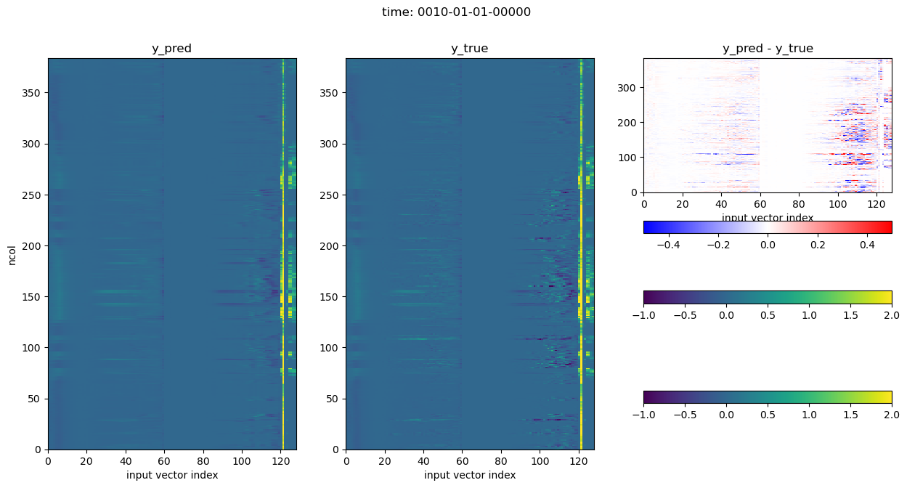
5 day mean and time series
f_mli = glob.glob(str(cfg['dataroot']/Path('E3SM-MMF.mli.0001-02-01-*')))
# dir_test_samples = '/global/homes/s/sungduk/work/LEAP/E3SM-MMF_baseline/test_data/0010-01'
dir_test_samples = 'test_data/0010-01'
f_mli = sorted(glob.glob(f'{dir_test_samples}/E3SM-MMF.mli.0010-01-0[12345]-*.nc'))
print(f'#files: {len(f_mli)}')
tds_test = load_nc_dir_with_generator_test(f_mli, latlim=[-10,10], lonlim=[160,200])
#files: 3
# creating numpy array defeats the purpose of tf Dataset pipeline,
# but, just doing it here for quick sanity check.
work = list(tds_test.as_numpy_iterator())
x_true = np.concatenate([ work[k][0] for k in range(len(work)) ])
y_true = np.concatenate([ work[k][1] for k in range(len(work)) ])
print(x_true.shape, y_true.shape)
load_model = keras.models.load_model("./saved_model/best_model_proto.h5")
y_pred = load_model(x_true)
2023-05-26 18:37:56.650758: I tensorflow/core/common_runtime/executor.cc:1197] [/device:CPU:0] (DEBUG INFO) Executor start aborting (this does not indicate an error and you can ignore this message): INVALID_ARGUMENT: You must feed a value for placeholder tensor 'Placeholder/_0' with dtype int32
[[{{node Placeholder/_0}}]]
(24, 124) (24, 128)
fig, ax = plt.subplots()
y_true_mean_T = np.mean(y_true[:,:60], axis=0)
y_pred_mean_T = np.mean(y_pred[:,:60], axis=0)
ax.plot(y_true_mean_T)
ax.plot(y_pred_mean_T)
ax.set_title('5 Day mean (0010-01-01 to 0010-01-05)/ western eq. Pacific mean')
ax.set_xlabel('level')
ax.set_ylabel('T tendency (scaled)')
fig.set_size_inches(7.5,3)
fig, ax = plt.subplots()
y_true_mean_Q = np.mean(y_true[:,60:120], axis=0)
y_pred_mean_Q = np.mean(y_pred[:,60:120], axis=0)
ax.plot(y_true_mean_Q)
ax.plot(y_pred_mean_Q)
ax.set_title('5 Day mean (0010-01-01 to 0010-01-05)/ western eq. Pacific mean')
ax.set_xlabel('level')
ax.set_ylabel('Q tendency (scaled)')
fig.set_size_inches(7.5,3)
for k, kvar in enumerate(vars_mlo[2:]):
fig, ax = plt.subplots()
y_true_surface_var = y_true[:,120+k][:72*1]
y_pred_surface_var = y_pred[:,120+k][:72*1]
ax.plot(y_true_surface_var)
ax.plot(y_pred_surface_var)
ax.set_title('Time series (72 time steps on 0010-01-01)/ western eq. Pacific mean')
ax.set_xlabel('level')
ax.set_ylabel(f'{kvar} (scaled)')
fig.set_size_inches(7.5,2.25)
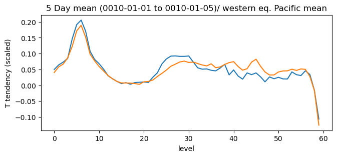
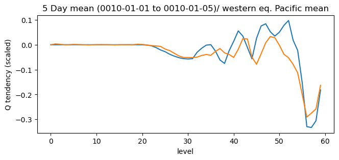
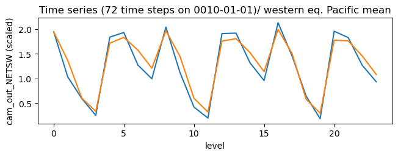
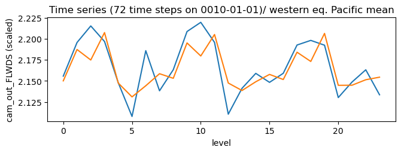
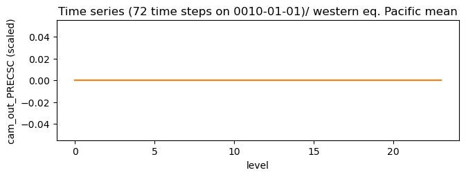
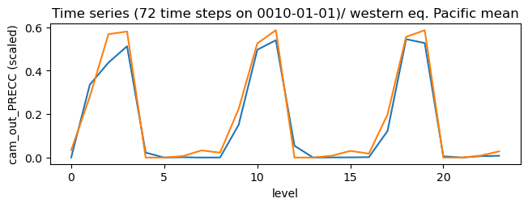
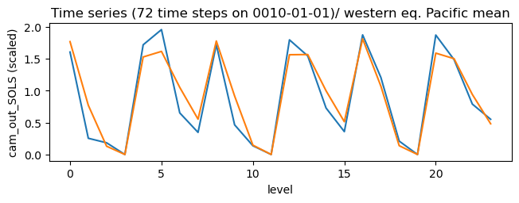
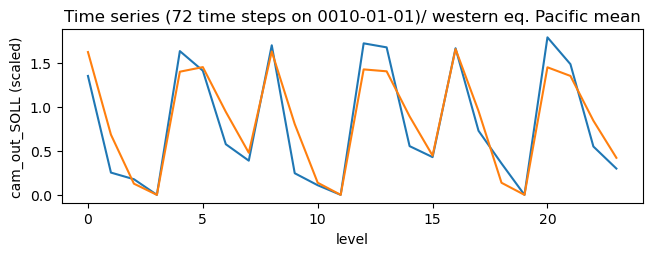
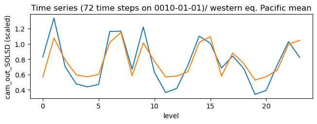
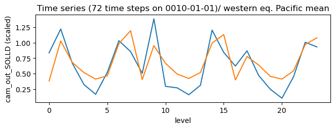